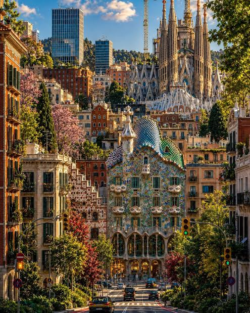
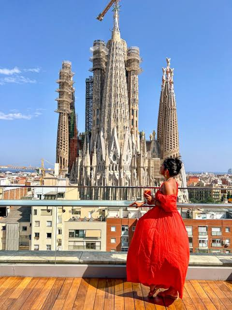
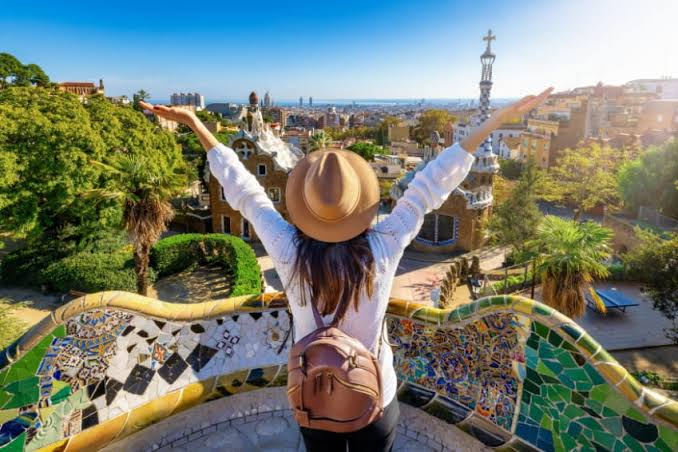
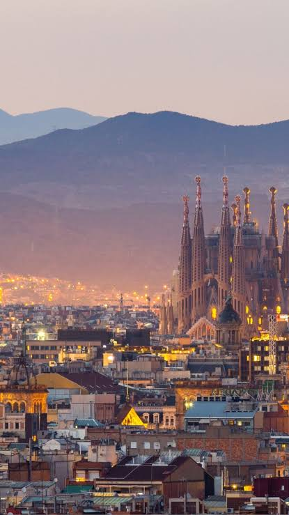
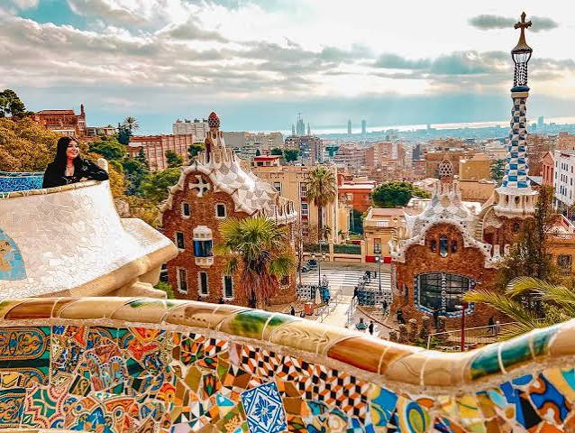

Барселона
Барселона е прекрасен град во Шпанија, познат по својата архитектура, плажи и култура.
Фотографии од Барселона

Коментари
Прекрасно место!

Коментари
Пеубава архитектура!

Коментари
Прекрасно!

Коментари
Сакам да го посетам!
Блог за Барселона

Саграда Фамилија
Саграда Фамилија е една од најпознатите знаменитости во Барселона, позната по својата уникатна архитектура и импресивните детали. Оваа базилика е дело на познатиот архитект Антони Гауди и е симбол на градот.

Парк Гуел
Парк Гуел е еден од најпознатите паркови во Барселона, препознатлив по шарените мозаици и необичната архитектура на Антони Гауди. Од паркот се нуди прекрасен поглед кон градот..

Плажите во Барселона
Барселона е позната и по своите прекрасни плажи, каде што посетителите можат да уживаат во сонцето, морето и долгите прошетки покрај брегот. Плажите се одлично место за одмор и уживање во атмосферата на градот.